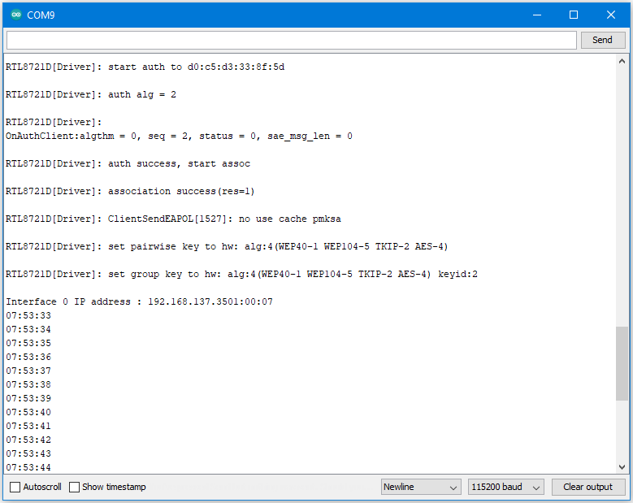

[RTL8722CSM] [RTL8722DM] Watchdog Timer Simple Example¶
Materials
Ameba D [RTL8722 CSM/DM] x 1
Example
In this example, we will use this simple watchdog timer example runs on the Ameba RTL8722 module to illustrate how to use the watchdog API. Before we get into the details of the example, let’s briefly go through the definition of Watchdog as well as it’s working principles.
Watchdog
Watchdog Timer (WDT) is a hardware timer that is used to detect the occurrence of a software fault, then automatically generates a system reset or a watchdog interrupt on the expiry of a programmed period.
In layman terms, imagine in the situation while your micro-controller is confused in an infinity loop, or any case like the micro-controller hang while performing some tasks. The normal troubleshooting method would be to press the reset button and jump out of the infinity loop. However, is it practically impossible to do press on the button all time, therefore, the watchdog timer that embedded inside the micro-controller would help with this situation.

Feed the Dog
If you have a dog in your home. You need to feed that dog at a regular interval. if you can’t feed one day, it will bite you! And likewise, this is the working logic behind the watchdog timer.
Then we move to the coding part for this example, for this example, you will only need the Ameba RTL8722 board itself.

Firstly, make sure the correct Ameba development board is selected in Arduino IDE: “Tools” -> “Board” -> “RTL8722CSM/RTL8722DM”. Then open the “Watchdog Timer” example in “File” -> “Examples” -> “AmebaWatchdog” -> “Watchdog Timer”:
{kind=link}
Upon successfully upload the sample code, open the serial monitor, and press the reset button. You will find that the successful task (small task) can refresh the watchdog within the 5 seconds (initialized in the watchdog timer). However, the failed task (big task) will not be able to refresh the watchdog within 5 seconds, which leads to the microcontroller reset.